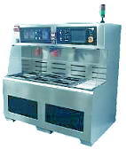

Wet Etching
In wafer
fabrication, etching refers to a process by which material is removed
from the wafer, i.e., either from the silicon substrate itself or from
any film or layer of material on the wafer. There are two major
types of etching: dry etching and wet etching.
Wet Etching
is an etching process that utilizes liquid chemicals or etchants to
remove materials from the wafer, usually in specific patterns defined by
photoresist masks on the wafer. Materials not covered by these
masks are 'etched away' by the chemicals while those covered by the
masks are left almost intact. These masks were deposited on the
wafer in an earlier wafer fab step known as
'lithography.'
A simple wet
etching process may just consist of dissolution of the material to be
removed in a liquid solvent, without changing the chemical nature of the
dissolved material. In general,
however, a wet etching process involves one or more chemical reactions
that consume the original reactants and produce new species.
A basic wet
etching process may be broken down into three (3) basic steps: 1)
diffusion of the etchant to the surface for removal; 2) reaction between
the etchant and the material being removed; and 3) diffusion of the
reaction byproducts from the reacted surface.
Reduction-oxidation (redox) reactions are commonly encountered in wafer
fab wet etching processes, i.e., an oxide of the material to be etched
is first formed, which is then dissolved, leading to the formation of
new oxide, which is again dissolved, and so on until the material is
consumed.
Wet etching
is generally
isotropic,
i.e., it proceeds in all directions at the same rate. An etching
process that is not isotropic is referred to as
'anisotropic.'
An
etching process that proceeds in only one direction (e.g., vertical
only) is said to be 'completely anisotropic'.
|
 |
|
Figure 1.
Example of a Wet Etching Station; source:
www.futurefab.com |
In
semiconductor fabrication, a high degree of anisotropy is desired in
etching because it results in a more 'faithful' copy of the mask
pattern, since only the material not directly under the mask are
attacked by the etchant. Isotropic etchants, on the other hand,
can etch away even the portion of material that's directly under the
mask (usually in the shape of a quarter-circle), since its horizontal
etching rate is the same as its vertical rate.
When an
isotropic etchant eats away a portion of the material under the mask,
the etched film is said to have 'undercut' the mask. The amount of
'undercutting'
is a measure of an etching parameter known as the 'bias.'
Bias
is simply defined as the difference between the lateral dimensions of
the etched image and the masked image. Thus, the mask used in etching
must compensate for whatever bias an etchant is known to produce, in
order to create the desired feature on the wafer.
Because of
the isotropic nature of wet etching, it results in high bias values that
are not practical for use in pattern images that have features measuring
less than 3 microns. Thus, wafer patterns with features that are smaller
than 3 microns must not be wet-etched, and should instead be subjected
to other etching techniques that offer a higher degree of anisotropy.
Another
important consideration in any etching process is the 'selectivity' of
the etchant. An etchant not only attacks the material being removed, but
the mask and the substrate (the surface under the material being etched)
as well. The 'selectivity' of an etchant refers to its ability to remove
only the material intended for etching, while leaving the mask and
substrate materials intact.
Selectivity,
S, is measured as the ratio between the different etch rates of
the etchant for different materials. Thus, a good etchant needs to
have a high selectivity value with respect to both the mask (Sfm) and
the substrate (Sfs), i.e., its etching rate for the film being etched
must be much higher than its etching rates for both the mask and the
substrate.
Despite the resolution
limitations of wet etching, it has found widespread use because of its
following
advantages: 1)
low cost; 2) high reliability; 3) high throughput; and 4) excellent
selectivity in most cases with respect to both mask and substrate
materials. Automated wet etching systems add even more advantages:
5) greater ease of use; 6) higher reproducibility; and 7) better
efficiency in the use of etchants.
Of course,
like any process, wet etching has its own
disadvantages.
These include the following: 1) limited resolution; 2) higher safety
risks due to the direct chemical exposure of the personnel; 3) high cost
of etchants in some cases; 4) problems related to the resist's loss of
adhesion to the substrate; 5) problems related to the formation of
bubbles which inhibit the etching process where they are present; and 6)
problems related to incomplete or non-uniform etching.
Silicon
(single-crystal or poly-crystalline) may be wet-etched using a mixture
of nitric acid (HNO3) and hydrofluoric acid (HF). The
nitric acid consumes the silicon surface to form a layer of silicon
dioxide, which in turn is dissolved away by the HF. The over-all
reaction is as follows: Si + HNO3 + 6 HF --> H2SiF6
+ HNO2 + H2 + H2O.
Silicon
dioxide
may, as mentioned above, be wet-etched using a variety of HF
solutions. The over-all reaction for this is: SiO2
+ 6 HF --> H2
+
SiF6 + 2 H2O. Water-diluted HF with
some buffering agents such as ammonium fluoride (NH4F) is a
commonly used SiO2
etchant
formulation
Wet etching
of
aluminum and aluminum alloy layers may be achieved using slightly
heated (35-45 deg C) solutions of phosphoric acid, acetic acid, nitric
acid, and water. Again, the nitric acid consumes some of the
aluminum material to form an aluminum oxide layer. This oxide layer is
then dissolved by the phosphoric acid and water, as more Al2O3
is formed simultaneously to keep the cycle going.
Other
materials on the wafer may be wet-etched by using the
appropriate
etching solutions.
See Also:
Dry
Etching; Lithography/Etch;
Optical Lithography;
Electron Lithography
HOME
Copyright
© 2004
www.EESemi.com.
All Rights Reserved.